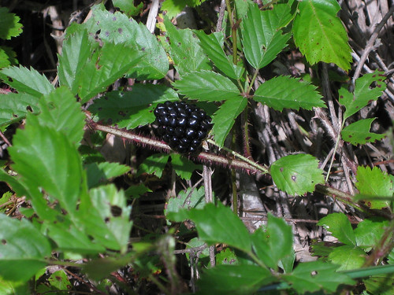
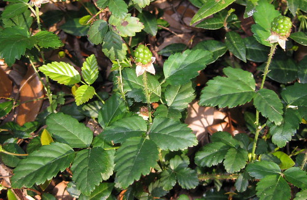
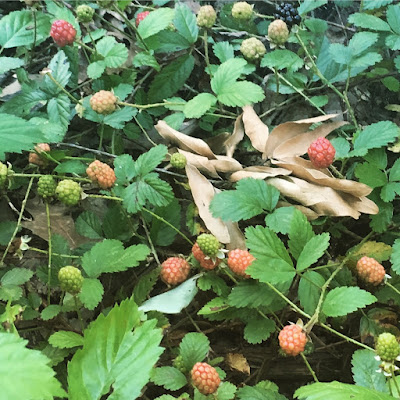
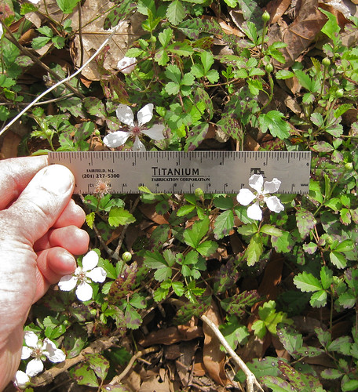
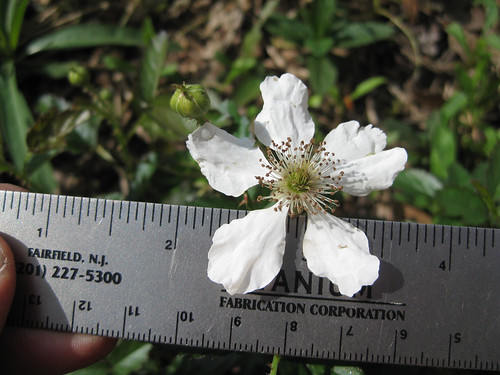

Dewberry
Scientific name: Rubus species
Abundance: plentiful
What: flowers, berries
How: open mouth, insert flower/fruit, then chew. seep flowers/young leaves in hot water for tea
Where: Sunny wastelands, borders between woods and fields. Dewberry plants grow as a low, horizontal ground cover.
When: Spring
Other uses: wine, jelly, tea, wine
Nutritional Value: carbohydrates, vitamin C; small amount of minerals and vitamins A & B
Dangers: sharp thorns
Medicinal Summary:
Root/Leaves - anti-diarrheal, soothes gastrointestinal inflammations, soothes skin inflammations (
tisane)
Ripe fruit.
Unripe fruit.
Getting more ripe.
Dewberry flowers.
Close-up of dewberry flower.
Dewberry vines can be found overrunning just about any sunny or shady open area. The dewberry plant creeps along the ground as a thorny vine as opposed to blackberries which grow in the form of an upright cane. Dewberries are common along Texas roadsides, fields, abandoned land, and woodland paths. The vines are quite thin, having diameters not much larger than the a pencil lead, but are tough and grow into impassable mats. The sweetest fruits will be found in areas that receive full sun but also plenty of water.
A delicious tea can be made from dewberry flowers in the spring and its young leaves spring/summer/fall. I recommend using the leaves rather than flowers so not to reduce the amount of fruit produced. For tea pick young healthy leaves in late morning after any dew has dried but before the sun has had a chance to evaporate the volatile flavoring oils out of the leaves. Dry the leaves before use for a richer flavor as that will allow the cell walls to break down some, allowing the flavoring agents to escape the cells into your cup. The combination of dewberry and yaupon holly leaves makes a most excellent and vitamin-rich tea rich.